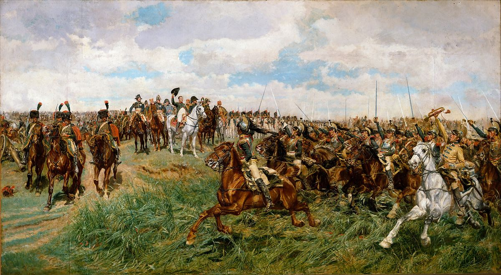

<head>
<meta charset="UTF-8" />
<meta name="keywords" content="drawing, painting" />
<meta name="description" content="drawings by Sunjy" />
<title>Sunjy</title>
<link rel="shortcut icon" type="image/x-icon" href="../../mImages/mCommon/favicon.ico" media="screen" />
<link rel="stylesheet" type="text/css" href="../../mCsses/mCommon/mCssA.css" />
<link rel="stylesheet" type="text/css" href="../../mCsses/mCommon/mCssB.css" />
<link rel="stylesheet" type="text/css" href="../../mCsses/mCommon/mCssC.css" />
<link rel="stylesheet" type="text/css" href="../../mCsses/mCommon/mCssD.css" />
<link rel="stylesheet" type="text/css" href="../../mCsses/mContent/mCssA.css" />
<link rel="stylesheet" type="text/css" href="../../mCsses/mContent/mCssB.css" />
<link rel="stylesheet" type="text/css" href="../../mCsses/mContent/mCssC.css" />
<link rel="stylesheet" type="text/css" href="../../mCsses/mContent/mCssD.css" />
</head>
<script type="text/javascript" src="../../mScripts/mContent/mContentAA.js" /></script>
<script type="text/javascript" src="../../mScripts/mContent/mContentAB.js" /></script>
<script type="text/javascript" src="../../mScripts/mContent/mContentAC.js" /></script>
<script type="text/javascript" src="../../mScripts/mContent/mContentAD.js" /></script>
<script type="text/javascript"></script> 
<script type="text/javascript">
document.write('<div class="mImgAbsolute"></div>');
/*
document.write('<p class="mFontSizeBColor" />From a white paper...</p>');
document.write('<table class="center"><tr><td>');
document.write('');
document.write('</td></tr></table>');
*/
</script>


<script type="text/javascript">
document.write('<p class="mFontSizeBColor" />1807, Friedland</p>');
document.write('<p class="mFontSizeSColor" />By Ernest Meissonier, ca. 1861–75. This work, the largest and most ambitious painting by an artist renowned for meticulously rendered cabinet pictures, evokes one of Napoleon Bonaparte’s greatest victories. Meissonier made hundreds of preparatory studies for it, including drawings and sculptural models. He conceived the picture as part of a cycle of five key episodes in the life of the Emperor, only one other of which was completed: <i>The Campaign of France—1814</i>, an image of defeat (Musée d&#39;Orsay, Paris). The present work gained notoriety in 1876, when the American department store magnate Alexander T. Stewart purchased it from the artist, sight unseen, for the then astronomical sum of $60,000.</p>');
document.write('<table class="center" /><tr><td>');
document.write('The Campaign of France—1814</i>, an image of defeat (Musée d&#39;Orsay, Paris). The present work gained notoriety in 1876, when the American department store magnate Alexander T. Stewart purchased it from the artist, sight unseen, for the then astronomical sum of $60,000." />');
document.write('</td></tr></table>');
</script>


